Study Chapters
The Skeleton & Landmarks
The rigid structural framework — ribcage, pelvis, spine, and joints — that dictates how soft tissues stretch, compress, and drape during movement.
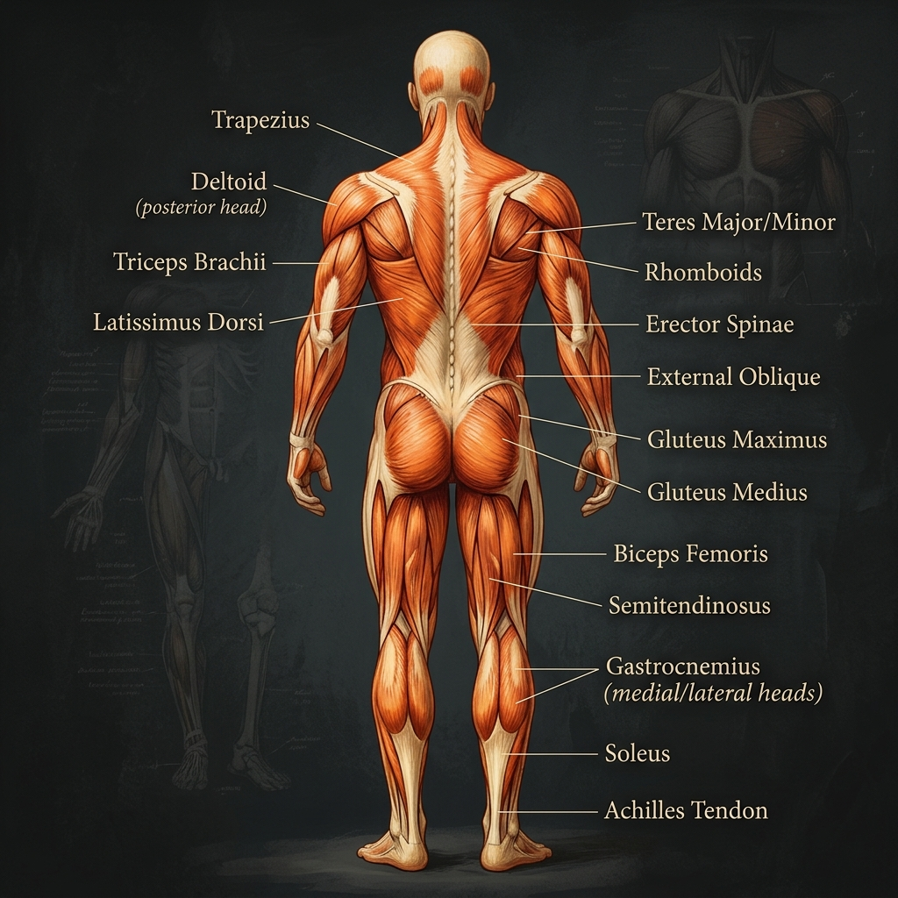
Musculature & Surface Form
How muscles layer over bone to create surface contours — tension lines, compression folds, torsion diagonals, and the squash-and-stretch of living form.
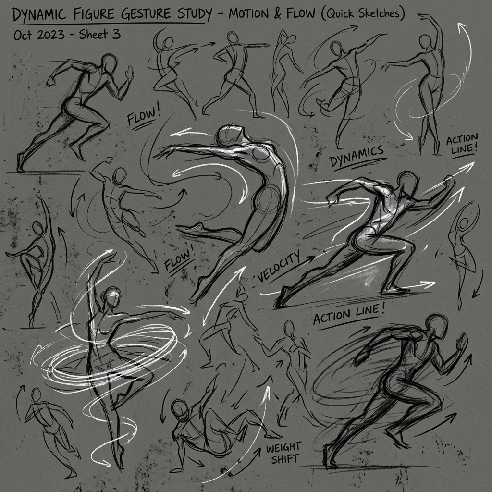
Gesture, Rhythm & Motion
Action lines, contrapposto, torsional flow, and the "Structure + Gesture = Style" formula drawn directly from your motion study sources.
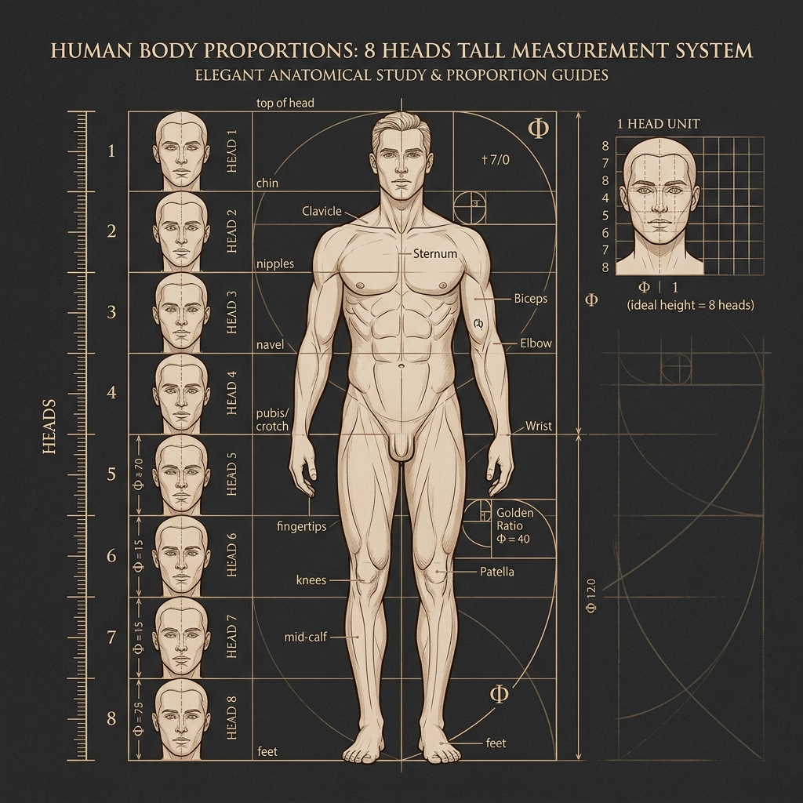
Surface Form in Motion
How joints, skin folds, bone landmarks, and fat distribution transform the body's surface from static to dynamic — squash, stretch, and drape.
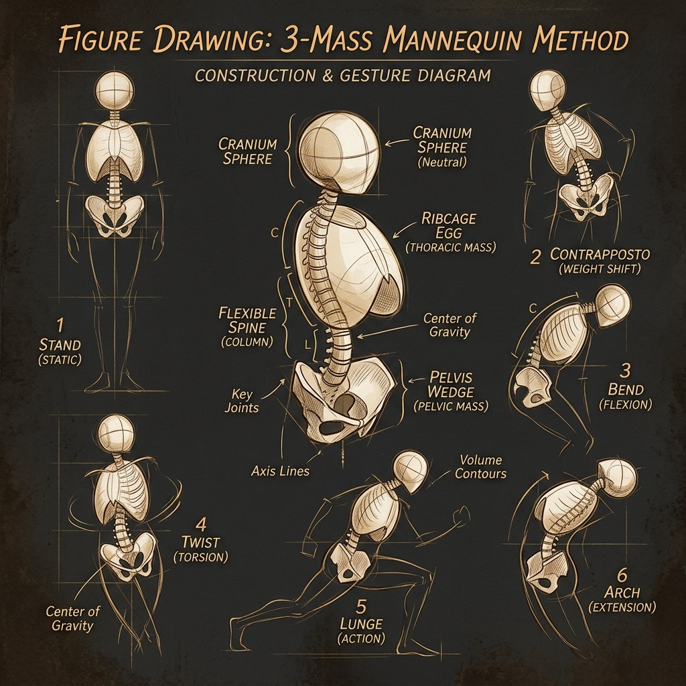
Basic Forms & Structure
Spheres, eggs, cylinders, boxes and wedges — reduce the human body to fundamental 3D volumes and build all anatomy on top. The mannikin principle.
The Skeleton & Landmarks
The rigid structural framework that dictates how all soft tissues stretch, compress, and drape during movement.
Why Bony Landmarks Are the Artist's Foundation
Based on the 3D skeletal and anatomical models in your sources, bony landmarks form the rigid structural framework that dictates how soft tissues — muscles, fat, and skin — stretch, compress, and drape during movement. Unlike muscles which shift and deform, bony landmarks never change shape, making them the most reliable reference points in any pose.
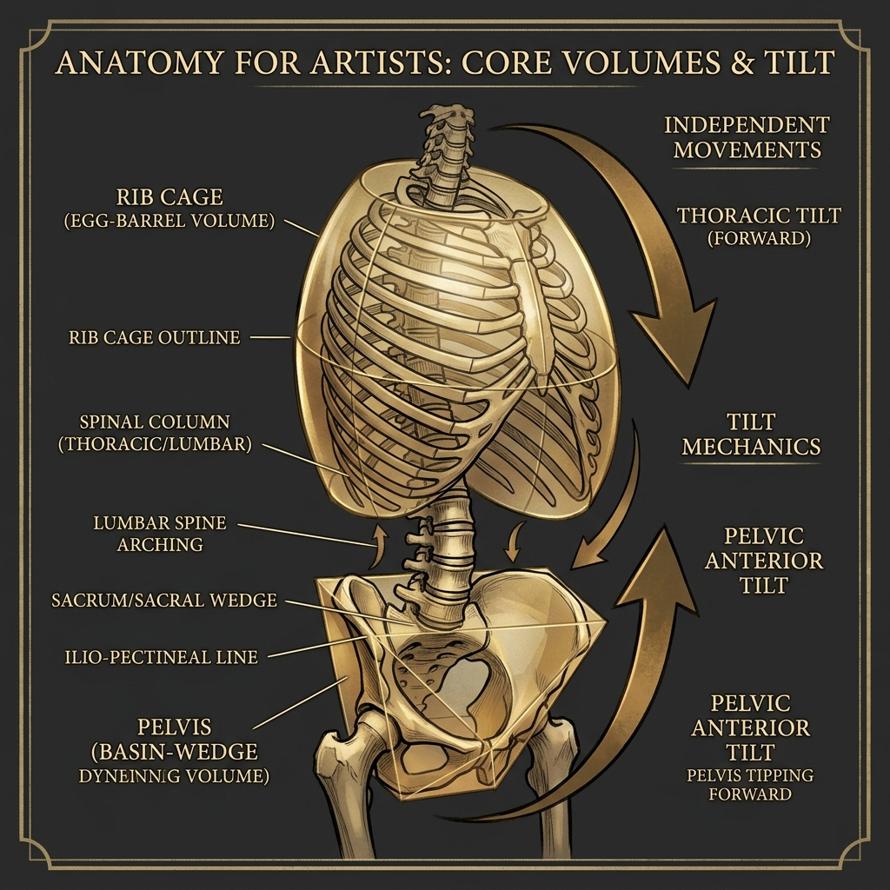
Ribcage & Pelvis
The two primary non-deforming masses of the torso. The ribcage is a large egg-shaped volume anchoring the upper body; the pelvis is a rigid basin anchoring the lower body. Together they are the most vital landmarks for mapping proportions and twists.
- Rib border visible when bending backward — skin pulls tightly over the hard edge
- Iliac crest (top ridge of pelvis) anchors abdominal muscles
- Pelvis tilts independently of the ribcage — essential for drawing torsion
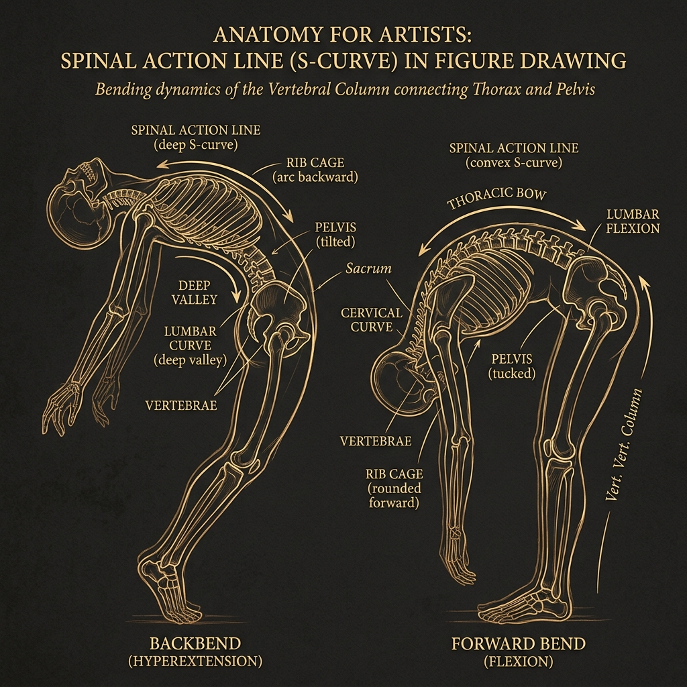
The Spinal Column
The spine is the sole skeletal connection between the ribcage and pelvis — it serves as the primary action line of the torso. Depending on pose, it forms a deep topographical valley (backbend) or bows outward as a prominent ridge (forward bend).
- Deeply compressed in backbends — creates a sharp spinal valley
- Bows outward prominently in forward bends
- S-curve connects neck to sacrum through 4 natural curves
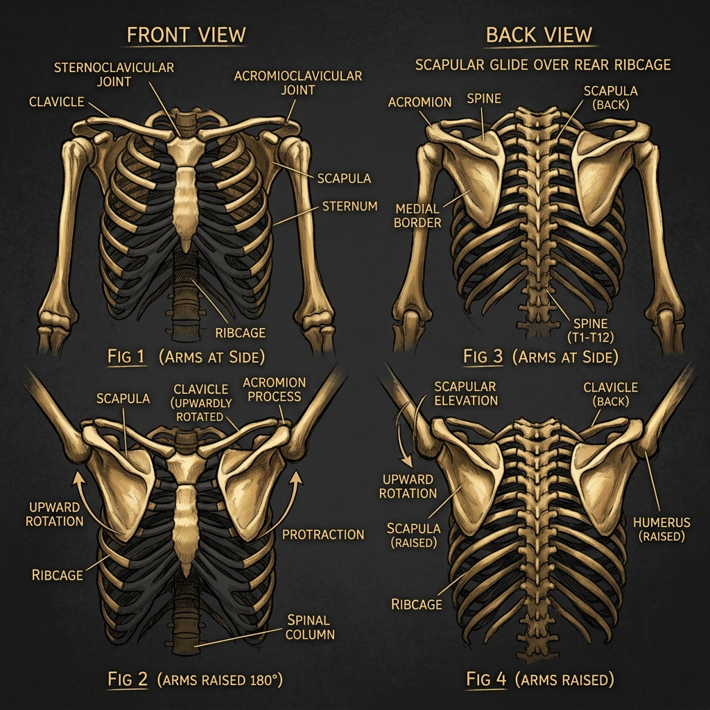
Clavicles, Sternum & Scapulae
Clavicles form a distinct horizontal ridge bridging shoulders to the sternum at chest center — in slender or aging figures they create sharp, jagged topographical lines that strongly catch light. Scapulae glide freely over the rear ribcage, drastically altering back topography with arm movement.
- Clavicle-sternum junction is highly visible from any angle
- Scapulae shift dramatically when arms raise, pull back, or push forward
- Acromion (bony shoulder point) is always a reliable landmark
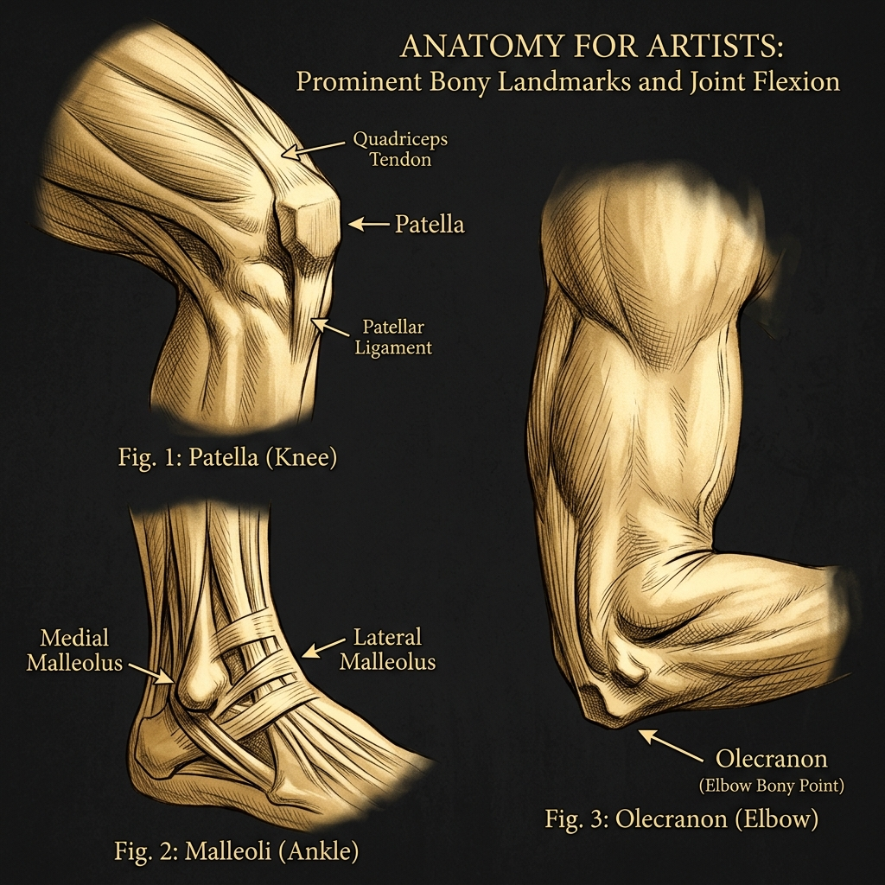
Knees, Ankles & Elbows
Joints have very little fat or muscle padding them, so they appear as pronounced, blocky ridges — especially in older figures. When structural tension transfers through limbs, joints become the sharpest visual anchor points on the body.
- Patella — shield-like block at the knee, changes shape when bent
- Malleoli — hard rounded protrusions bridging leg to foot on both sides
- Olecranon (elbow point) — highly visible when arm is bent or bearing weight
Musculature & Surface Form
How muscles layer over the skeleton to create visible contours, tension lines, and compression folds during movement.
The Four Laws of Muscle-Driven Surface Form
Your sources identify four key mechanical principles: Dynamic Tension (elongation creates long sweeping lines), Compression & Bunching (opposite side forces soft tissue outward into folds), Torsional Diagonal Flow (twisting shifts anatomy from vertical to oblique pathways like a wrung towel), and Active vs. Passive Draping (weight-bearing muscles harden; a lifted figure's relaxed tissues drape with gravity). Without this knowledge, you risk "bumps in all the wrong places."
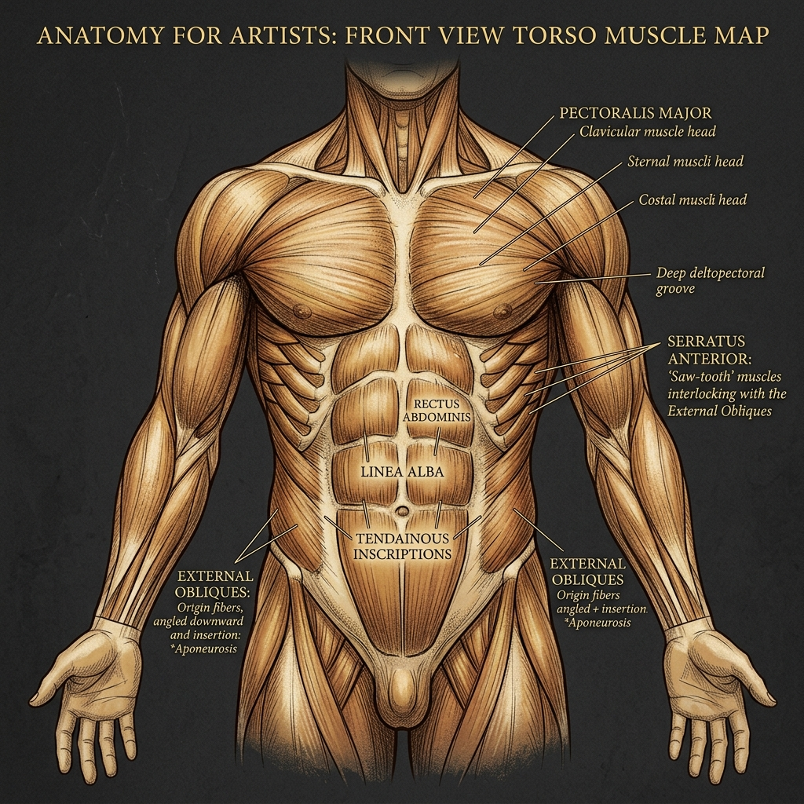
Pectoralis Major
A fan-shaped muscle attaching to the clavicle, sternum, and ribs, stretching across to the humerus to pull the arm forward. Acts as a complex system of overlapping planes connecting ribcage to pelvis.
- Creates the "chest shelf" from the front view
- Lower edge curves naturally into the armpit
- Twists on its insertion — watch this in arm raises
Rectus Abdominis & Obliques
The rectus spans from pubic bone to rib cartilages — each tier slants further upward. External obliques wrap the waist, responsible for twisting and bending the trunk, creating a prominent bulge (the "flank") over the iliac crest.
- Serratus anterior interlocks with obliques in a saw-tooth pattern
- Serratus visible below armpit when arm is raised
- Oblique flank defines the waist transition to hip
Trapezius
A large kite- or diamond-shaped muscle on the upper back and neck that moves the shoulder blades. Creates the slope from neck to shoulder and the prominent upper-back surface mass seen in all back-view drawings.
- Upper fibers — shoulder elevation (shrug)
- Middle fibers — retract scapulae toward spine
- Lower fibers — stabilize and depress scapulae
Latissimus Dorsi & Erector Spinae
The lats form a large V-shape covering the lower back and wrapping under the arm to the front of the humerus, creating the back wall of the armpit. Erector spinae are two thick column-like masses either side of the spine that pull the body upright.
- Lats create the V-taper silhouette from behind
- Lats visible as side flare below the armpit
- Erectors form the prominent groove on a muscular back
Gesture, Rhythm & Motion
"Structure + Gesture = Style!" — the formula from your sources. How action lines, weight shift, and rhythmic flow create a living figure.
The Formula: Structure + Gesture = Style
Your sources define the fundamental equation: Structure (the skeleton's rigid framework) plus Gesture (the dynamic flow of movement) equals your unique artistic style. Without structure, gesture becomes formless. Without gesture, structure becomes stiff. The goal is to capture the continuous interplay between rigid skeletal framework and yielding soft tissues.
Action Lines
The action line — also called the long axis — is the longest uninterrupted line running through the core or along the edge of the figure. Before any anatomy is drawn, the action line captures the primary thrust, intent, and "sweep" of the pose. It establishes the direction and speed of movement, ensuring the entire body pushes toward a unified action.
- Draw this first — before any anatomy or structure
- C-curve — bending, reaching, arching poses
- S-curve — contrapposto, elegant standing poses
Weight Shift & Contrapposto
When a figure distributes weight unevenly — resting on one leg — the hip tilts downward toward the relaxed leg, and the shoulders tilt in the opposite direction to compensate. This is contrapposto. The twist curves the spine into a serpentine S-shape. A vertical line from the pit of the neck to the weight-bearing foot confirms the pose's believability.
- Hips and shoulders tilt in opposing directions
- Center of gravity: neck pit → weight-bearing foot
- Spine curves naturally into S-shape under contrapposto
Rhythm Lines
Rhythm is the continuous, undulating flow of lines — often forming S-curves or wave patterns — that travel across and between anatomical forms. Rather than isolated parts, rhythm creates a "symphony of line" that connects contours to one another, guiding the viewer's eye from the stretch of the neck through the pinch of the obliques and down the curve of the leg.
- Rhythm ensures transitions between masses feel continuous
- S-curves and wave patterns are the visual "connective tissue"
- Shoulder-to-hip opposition is rhythm at the macro scale
Diagonal Flow in Twists
Because the ribcage and pelvis rotate semi-independently, twisting acts like a wrung-out towel — fundamentally shifting the flow of anatomy from vertical lines to oblique, diagonal pathways. Sharp diagonal tension lines bridge opposing points (left shoulder → right hip), highlighting specific core muscles engaged in the twist.
- Torso twists create diagonal, not vertical, surface lines
- Opposing shoulder and hip create the diagonal anchor points
- Rib border becomes a distinct hard edge in torsion
The Torso Machine
The torso operates as a dynamic system: two rigid bony masses (ribcage + pelvis) connected by the flexible spine — not as a single solid block. In extreme extensions, the ribcage thrusts upward aggressively and the abdomen stretches taut. In forward flexions, the chest collapses, shoulders roll forward, and structural tension transfers entirely to a broad, outward-bowing back.
- Backbend: ribcage dominant, abdomen taut, lower back compressed
- Forward bend: chest collapsed, back bows outward broadly
- Side bend: ribcage drops to pelvis, opposite side stretches
Gesture Across Age & Body Type
Youthful figures (18–25): taut skin and muscle tone create sharp sweeping structural tension lines over skeletal protrusions. Heavier figures (late 20s–40s): thicker subcutaneous fat smooths transitions, requiring deeper bunching in compression. Older figures (50s+): muscle loss makes the skeleton a stark map — harsh lighting catches jagged ridges without muscle cushion.
- Young — sharp, sweeping, tightly mapped structural lines
- Heavier — softer gradients, profound fold compression
- Older — skeletal ridges dominate, sinewy tendons stark
Surface Form in Motion
How the body's surface transforms from static to dynamic — squash, stretch, skin folds, and shifting bone landmarks at every major joint.
Squash & Stretch — The Core Principle
Your sources identify squash and stretch as the fundamental law of surface form in motion. Muscles work in antagonistic pairs: the primary working muscle contracts, shortens, expands, and bulges outward — while the opposing muscle must elongate, flatten, and stretch. Track where flesh is compressing, where it's stretching, and where hard bones are pressing against the surface — and you can capture the living energy and physical weight of the body in motion.
Elbow & Arm Mechanics
When bending the elbow, the biceps compress and bulge while the triceps at the back stretch out and straighten. When the arm is locked straight, the elbow bone (ulna) aligns and forms a dimpled depression. When bent, the ulna acts as a lever, juts out sharply, stretches the skin over its point, and surrounding skin sags.
- Biceps compress/bulge — triceps elongate/flatten simultaneously
- Elbow point (olecranon) juts sharply when arm bends
- Bending wrist creates major stair-like skin folds
Knee & Leg Mechanics
In neutral standing, hamstrings and adductors merge into one soft form. When the knee bends, the hamstrings actively flex — shortening and becoming rounder. The patella slides down into a cartilaginous groove when the knee is deeply bent, exposing the flat bottom plane and knobby femoral condyles beneath the skin.
- Bent knee: patella slides down, femoral condyles become visible
- Fat around kneecap can shift, creating a recessed dimple
- Hamstrings visibly shorten and round when knee is flexed
Waist & Torso Folds
Forward bend: abdominal muscles shorten and bunch like an accordion, creating deep transverse folds around the navel. Backward extension: abdomen stretches tight, skin bunches along the back and sides. Lateral bend: compressed side develops a prominent waistline fold; opposite side stretches taut.
- Forward fold — accordion-like transverse abdominal folds
- Backbend — back skin bunches, abdomen pulls taut
- Side bend — waistline fold on compressed side
Gluteal & Hip Mechanics
When a leg is weight-bearing, the buttock flattens out. When relaxed, muscle and fat drop — making the gluteal fold lower and rounder. Seated: fleshy masses compress and spread outward like an elastic cushion. Leg abducted sideways: femur presses deeply between gluteal muscles, creating a noticeable concave hollow at the hip.
- Weight-bearing leg: buttock flattens and firms
- Relaxed leg: gluteal fold drops lower and becomes rounder
- Abduction: femur creates a concave hollow at the hip
Scapula & Armpit Motion
Scapulae slide dynamically across the back of the ribcage. When the arm raises above the head, the scapula rotates, pushing its inner edge outward. At the front, raising the arm stretches the pectoralis upward, dramatically opening and changing the shape of the armpit — a frequently neglected transformation in figure drawing.
- Scapula inner edge pushes outward when arm is raised overhead
- Armpit shape transforms dramatically with arm elevation
- Pec major stretches upward — its lower edge lifts with it
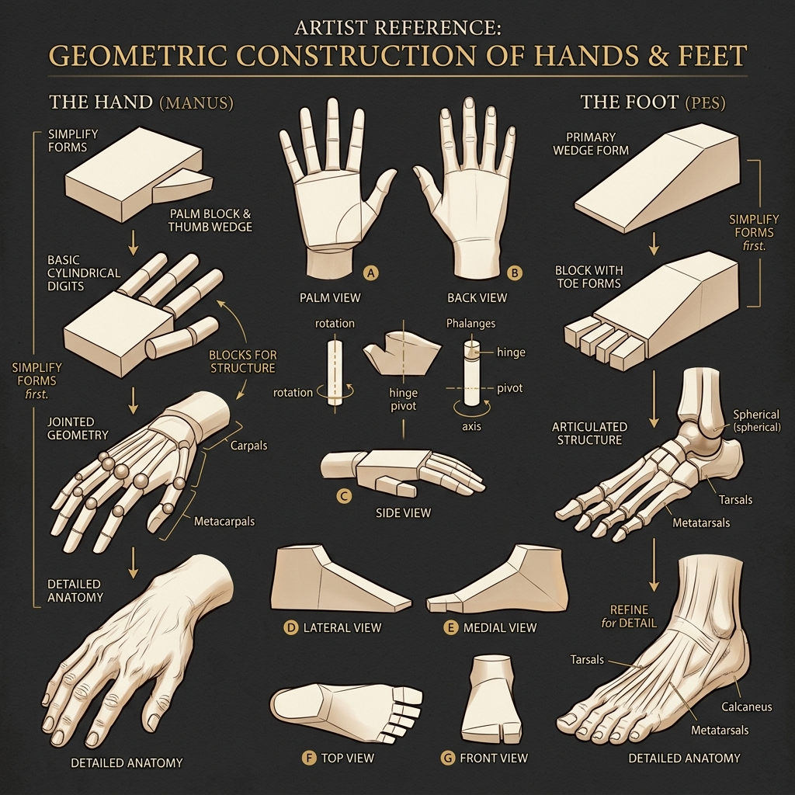
Wrist & Hand Details
Bending the wrist creates major, stair-like skin folds to manage compression. When the thumb is hyperextended outward, the two tendons at its base pull tight against the skin, forming a distinct triangular depression — the "anatomical snuff box" — a reliable reference point for hand artists.
- Wrist bend — stair-like stacked skin folds on compressed side
- Thumb extension — anatomical snuff box depression visible
- Tendon pathways become visible cords on the back of the hand
Basic Forms & Structure
Before anatomy, there is geometry. Reduce the human body to fundamental 3D volumes — spheres, eggs, cylinders, boxes and wedges — then build detail on top.
The Mannikin Principle
Your sources confirm that artists construct the human body by breaking down complex anatomy into a framework of fundamental 3D shapes. The goal is to manipulate the figure in three-dimensional space, accurately project foreshortened limbs, and establish a convincing sense of weight and bulk — before detailing the surface anatomy. Think of it as building a sculpture armature before adding clay.
The Three Primary Masses
The entire human figure is built on three main rigid masses connected by a flexible spine. These masses can twist and tilt against each other, creating the full range of human gesture. Draw these three masses first — in correct relationship and perspective — before adding any anatomy.
Form-by-Form Breakdown
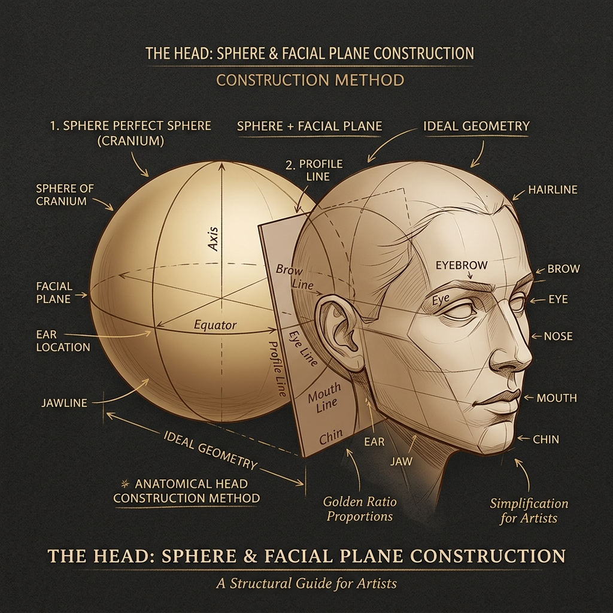
Sphere + Facial Plane
The skull is constructed first as a perfect sphere (the cranium) with a flat facial plane attached to its front face. This makes perspective and tilt calculations simple and definite.
- Cranium = sphere; face = angled flat plane
- Flattened sides represent the temples
- Ear aligns at the sphere's equator line
- Jawline is a wedge below the sphere
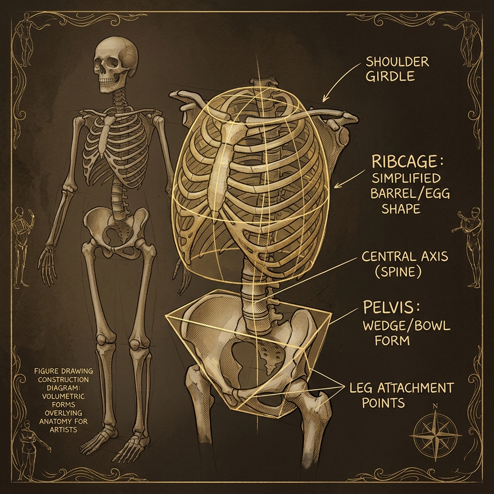
Egg & Bowl
The ribcage is a large egg-shaped or barrel volume with an inverted V-shaped costal arch at the bottom. The pelvis is a rigid boxy basin. These two non-deforming volumes anchor all figure construction.
- Ribcage: egg/barrel, wider at the bottom third
- Pelvis: box/wedge, tilts forward slightly (anterior tilt)
- Spine connects them — the only bridge between the masses
- Visualize them as two counterbalancing boxes
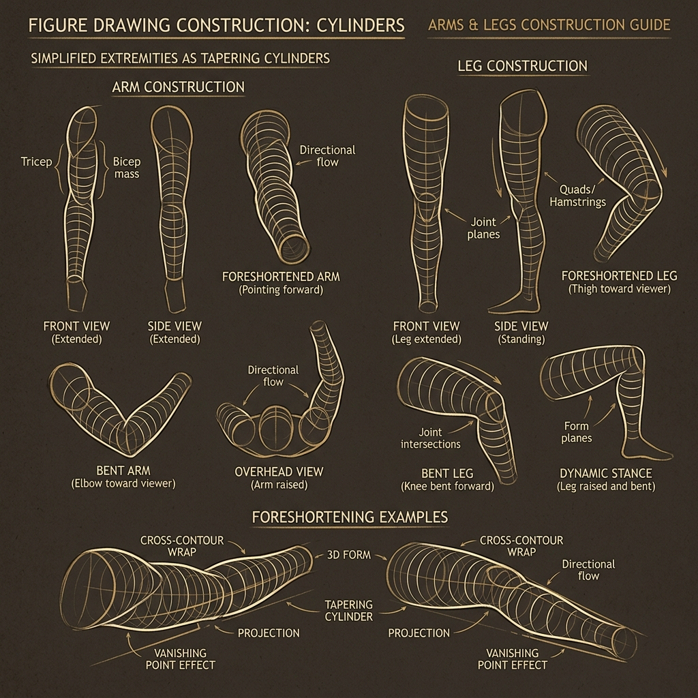
Tapering Cylinders
Arms and legs are depicted as elongated, tapering cylinders or tubular forms to capture their length, mass, and direction. Cross-contour wrap lines communicate 3D form and are essential for correct foreshortening.
- Upper arm & thigh: round cylinders
- Forearm & calf: triangular wedge cross-section
- Cross-contour lines show the cylinder turning in space
- "Wedging and passing" conveys interlocking depth
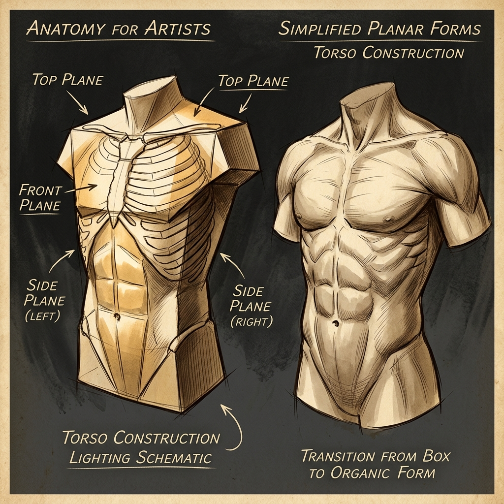
The Box & Planes
The torso is broken into clear planes — front, side, and top — that catch light differently. Understanding these planes is what separates flat figure drawings from ones that feel three-dimensional and solid.
- Front plane: pecs, abs, sternum — faces the viewer
- Side planes: lats, obliques — turn away from viewer
- Top plane: clavicles, shoulders — faces upward
- Each plane has a distinct light value under direct light
Blocks & Wedges
Because hands and feet are highly complex, they are blocked out as simple solid forms first. The hand is a 3D box (palm) with smaller cylindrical or boxy segments (fingers). The foot is a primary wedge with toe blocks at the front.
- Palm = flat 3D box; thumb = separate wedge
- Fingers = interlocking boxy segments in 3 rows
- Foot = elongated wedge (arch) + heel block
- Foot divides into 3 equal boxes: toes, arch, heel
Spheres & Hinge Blocks
Areas of structural articulation — shoulders, elbows, knees — are built using simple spheres or block-like hinges that define exactly where cylindrical limbs connect and pivot. Getting joints right is what makes limbs feel attached rather than floating.
- Shoulder: sphere sinking into the upper arm (deltoid wedge)
- Elbow & knee: square/block hinge forms
- Wrist: transitional block between forearm and hand box
- Kneecap: distinct flattened geometric block
Query Your Notebooks
You are connected to Anatomical Studies in Motion (153 sources) and Figures in Motion (158 sources). Use these prompts directly in NotebookLM for deeper dives.
Power Prompts for Your Notebooks
🔄 Refresh Content Anytime
This app is connected to your NotebookLM via MCP. Open a terminal and run notebooklm-mcp-server auth to refresh your session if it expires. Your session is saved at ~/.notebooklm-mcp/auth.json.